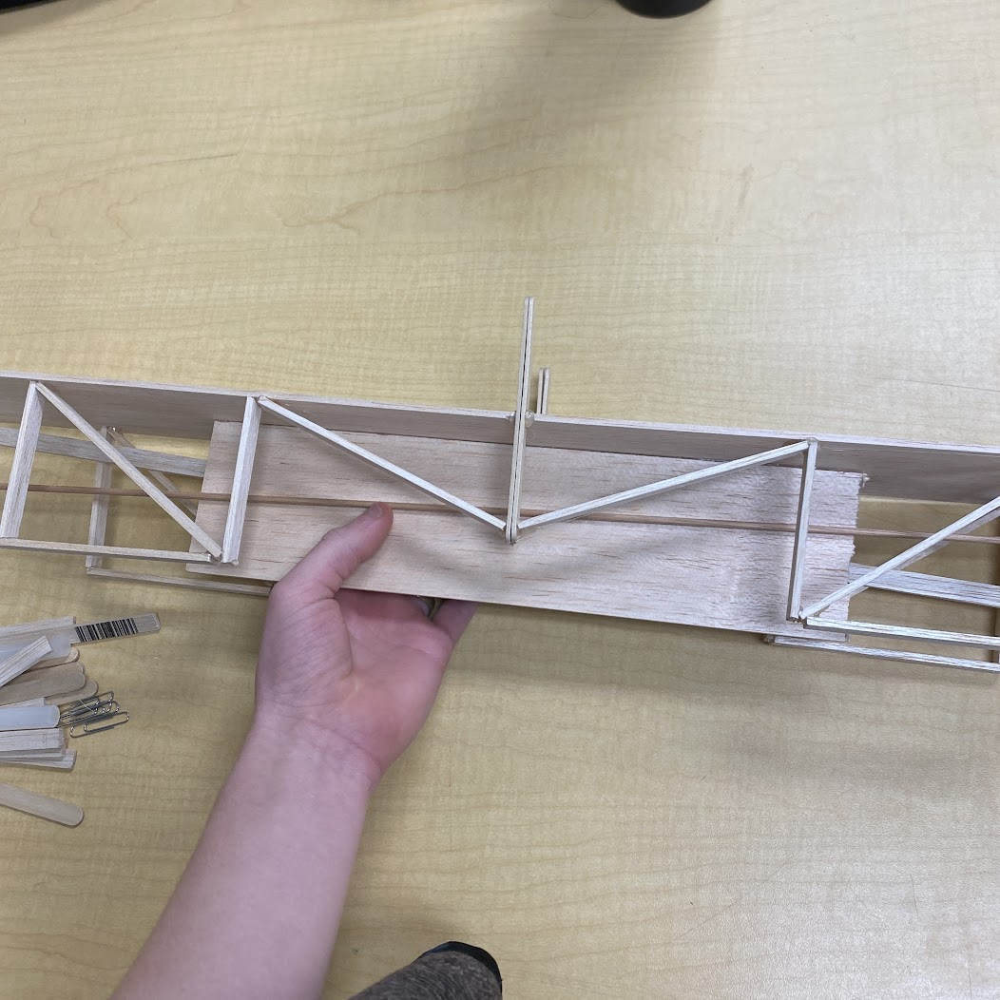

Bridge Project
This project could have came out really well, except I wasn't able to attend one of the days of this project, and that ended up hurting our group.
The final product in concept was good, and it probably could have worked, but seeing that I was out for one of the days, I wasn't able to finish up creating my design and I think that is what failed our group.
This project taught me that sometimes you are going to be the one to fail.
BY-NC-SA ©2023-2025 Snowfin Github